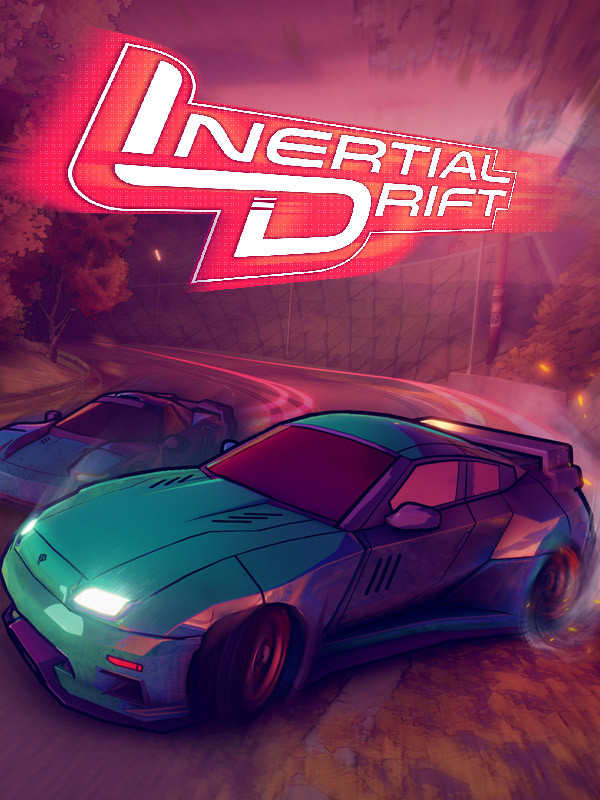

Inertial Drift
Inertial Drift
Details
|  | |
| Spielzeit | Nicht gespielt |
| Letzte Aktivität | Nie |
| Hinzugefügt | 27.04.2022 23:20:04 |
| Modifiziert | 10.11.2022 12:59:19 |
| Fertigstellungsstatus | Not Played |
| Bibliothek | Steam |
| Quelle | Steam |
| Plattform | PC (Windows) |
| Veröffentlichungsdatum | 11.09.2020 |
| Community Bewertungen | 85 |
| Kritiker Punkte | 89 |
| Benutzerwertung | |
| Genre | Indie Racing |
| Entwickler | Level 91 Entertainment |
| Verleger | PQube |
| Eigenschaft | Controller Support Multiplayer Pvp Remote Play Single Player Split Screen |
| Links | Communityhub Diskussionen Guides Neuigkeiten Shopseite PCGamingWiki |
| Tag | |
Beschreibung

Set in a 90's retro future, Inertial Drift is an Arcade Racer with a devastatingly unique handling model and unbelievably satisfying twin-stick drift mechanics. Inertial Drift offers a whole new level of accessibility and challenge to the arcade racing genre - for a driving experience genuinely unlike anything you've played before.


The left stick is used for steering, while the right hand Drift Stick gives you independent control over your drift. Intuitive for new players and uniquely challenging for pros.


Each one of the 16 cars is a totally different beast, with unique characteristics to master. Get behind the wheel of Sport hatchbacks, Coupe's, Supercars & more!


Tear through neon city streets, race around rural temple complexes and hurtle down winding mountain passes.


Each racetrack is set within a bold and distinctive environment. Including vibrant cityscapes, coastal sunsets, gorgeous starry skies and snow-capped peaks.


With 7 race event types there is plenty of opportunity to perfect your craft! Get competitive in a mix of races, head-to-heads, time trials and style showdowns!


Think you've mastered the perfect drift? What better way to prove it. Take on other racers via local co-op and online multiplayer.